Can't train here
This browser can't run Web Workers, so the network can't train on this page. Try a recent Safari, Chrome or Firefox.
Waiting for the network…

준비 · Junbi
Ready stance
confidence–
The network waiting for network data
parameters–
steps / s–
samples / s–
step–
Waiting for network data…
| layer | shape | params | ‖W‖ | Δ‖W‖ / step |
|---|---|---|---|---|
| waiting for network data | ||||
Dojo
Accuracy
Train
–
moving avg · step –
Held-out
–
fixed test set · step –
Honest note: these scores are on synthetic stick-figure skeletons generated in your browser, not on real people and not a measure of real taekwondo skill.
Loss
batch loss
smoothed
held-out loss
Confusion matrix no eval yet
rows: true techniquecolumns: predicted →
0%100%
Tap a technique below to see what it gets mistaken for.
Techniques held-out accuracy per class
Webcam mode phase 2
Soon: do a technique in front of your camera and the network will name it live. Pose tracking runs on your device; no video leaves your phone.